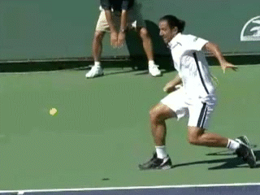
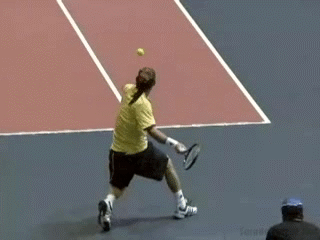
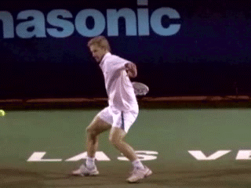
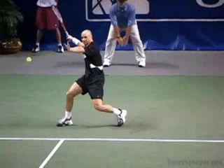
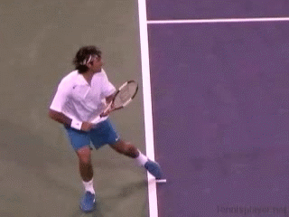

Contact Moves: The Spin Moves¶
David Bailey
In the first 3 articles we looked at the three aggressive Contact Moves. These are Contact Moves in which players learn to attack the ball with their feet. They are the Step Down (Click Here), the Transfer (Click Here), and the Front Foot Hop (Click Here.)

Can you recognize the 3 types of Spin Moves?
Now let's move on to our second category, the Neutral Contact Moves. Players use neutral Contact Moves to maintain their position in rallies, to neutralize fast deep balls, and to counterattack, depending on the situation.
In this article we'll look at the first set of neutral moves, what I call the Spin Moves. Then in we'll move onto other types of neutral contact moves in the next articles.
If you are reading my series for the first time, let's review the basic concept of a Contact Move once again. The Contact Move is a concept I created that synthesizes all the components of court movement. These include out steps, the step to the ball and the hitting stances, the movement of the feet and legs during the hit, the balance moves after the hit, and also, the recovery steps.
There are almost 20 different Contact Moves in pro tennis. Learning to recognize them allows us to make sense of the incredible variations in movement in the pro game, as well as evaluate how players move at all other levels.

The toes of the outside foot point in the shot direction after the landing.
Spin Moves
So now let's address the Spin moves. Spin Moves are contact moves in which the hips rotate around a central axis. Players use Spin Moves to neutralize or counterattack, by spinning their hips and also their feet during the swing.
They do this to generate racket speed, match the pace of the incoming ball, and generate ball spin. Spin Moves allow you to stand your ground in a rally, or even reverse your position if you are behind.
There are 3 spin move variations that players use depending on the type of ball they are facing. These are the Low Spin, the High Spin, and the Reverse Spin.
All are all hit from either a semi-open or open stance. As the players hit, their bodies become elevated and the torso and feet spin in the air. The landing varies with the type of spin move and the shot selection. The recovery steps pattern can be either shuffle steps, or a cross step followed by shuffle steps, depending on the ball and the court position.

Low Spin: the hips and legs spin after contact with the landing on the outside foot.
Low Spin
Players use Low Spin typically when moving sideways along the baseline, or a slight diagonal backwards. Low Spin moves are usually associated with fast balls hit with topspin, but balls that are either relatively low bouncing or played on the rise.
This makes the contact at around hip height, versus the higher contact point on the other spin moves we'll see below. The Low Spin can also be used when the ball is hit at the body or when the player moves around the ball to hit inside, again depending on contact height.
To execute the Low Spin, the player sets up in a semi-open or open stance, with about two thirds of the weight on the outside leg, and one third on the toes of the inside foot.
As the player swings, he stays low and keeps the angles in his legs. He makes contact at about hip level. After contact he spins the hips and the feet. The player lands on the outside foot first, or sometimes at about the same time with both feet.
The outside foot also lands flat. This indicates that the angles in the legs have remained unchanged. At the landing, the toes of the outside foot typically point in the direction of the shot.
This means that if the player is going down the line, the toes point straight ahead. If the ball is hit crosscourt, then the outside foot rotates further so that the toes point back at an angle in the direction of the shot.

The inside knee comes up, the contact is higher, and the landing is on the outside foot.
High Spin
The High Spin move is similar to the Low Spin but is usually employed from somewhat further back in the court and on higher bouncing, more heavily spun balls. The contact height is usually higher, around chest level or above.
As with the Low Spin, the objective in hitting the High Spin variation is to not lose your position on the baseline and stay even in the rally, or even counterattack.
To hit a High Spin, the player again sets up behind the ball in an open stance or semi open stance with two thirds of the weight on the outside foot. As the player swings up to the ball, watch how the opposite leg elevates and bends at the knee. This upward leg action helps the player come up higher off the court to control the contact height. This is the difference compared to the low Spin in which the player stays lower with both legs and has a lower contact point.
After the hit, the hips again spin around the axis of the spine, with a similar rotation in the feet. The player maintains his upright posture and lands first on the outside foot. As with the Low Spin, the toes of the outside foot usually point in the direction of the shot.

Reverse Spin: The front toes rotate towards one side fence with the sole of the rear shoe pointing to the other.
Reverse Spin
The Reverse spin is usually hit on high deep balls that have pushed the player back off the baseline. The biggest difference compared to the Low or High Spin is the increased amount of spin or body rotation. After contact the player continues to rotate much further than in the first two variations. Rather than landing on the inside foot, he now lands on the outside or opposite foot. The toes of the outside foot are now pointing towards the side fence instead of forward in the direction of the shot.
There is also a pronounced balance move here, which is a side kick with the opposite leg. The sole of the shoe of the opposite leg ends up pointing to the other side fence.
The advantage of the reverse spin is that you can use it to hit a very heavy ball, even though it is a defensive shot, but it can also be hit quite flat. Players usually have moved back on a diagonal to position for this shot. But the rotation during the hit reverses this and gets the body moving back toward the baseline.
So that's it for the Spin Moves. Stay tuned next for the Two Foot Pivot!

David Bailey is a native Australian who has spent 15 years studying tennis at the professional level. He has developed a new language for one of the most complex and misunderstood aspects of the game, footwork and court movement. David has worked with world class players and coaches, national tennis associations and top academies, and has presented at coaching seminars around the world. His teaching system, the Bailey Method, has become a regular part of the coaching curriculum at the Nick Bollettierri Tennis Academy, where it is personally endorsed by Nick
Visit David’s Website! Click Here!
To Contact David directly Click Here!
Dave Bailey Video Lessons & Transcripts
Full Illustrated Article: Golden Move #6: Low Spin · Golden Move #7: Reverse Spin
12. Lesson 11 Simple Hip Snapping Contact Moves
Video Transcript
So this is level three, lesson 11. And we move to another level where it's a little bit more complex because we're snapping our hips from an open stance. And there's two ways to snap the hips. You can snap the hips by shifting to the side, what I call a mogul, or you can snap the hips from a semi-open stance and square the hips up, what I call a spin move. So let's have a look at those. Okay, let's have a look at the mogul moves where we're going out to the defensive ball in the corners and shifting our weight off an open stance sideways.
So split, drop, crossover mogul, shift to the side, freeze the finish. Split, bounce, mogul, switch the feet. Backhand, open stance, split, drop, mogul, freeze the finish. And again, split, drop, crossover, mogul, cross back. Let's have a look at the high mogul. Same movement but more at our chest. Racket higher, high mogul. Down the line. Hit at our chest. High mogul. Down the line. Now it's coming at our body, so I'm shifting out of the way with the mogul. So shift mogul.
Hit it inside out. And again, shift, crossing, shift away from it and come back. Now the ball's coming deeper, so it's a backwards mogul. Crossing, mogul backwards, push off that back leg, mogul backwards, and come back and finish. Okay, let's have a look at the mogul sequence. Here we go. Split, cross, mogul, backhand, cross, mogul, high mogul, hit at the chest, shift mogul, hit it inside out, and then the backwards mogul, back, pause, come back. Let's do it again. Forehand mogul.
Backhand mogul. High mogul. Hit at the chest. Shift mogul. Shift away from it. And then the backwards mogul. Go backwards. Land and come back split. So here is our next level, which is level three, where we're snapping the hips. But we're really shifting the hips cuz it's simpler, what I call a mogul. And I'm going to throw these five moves to her out of the hand cuz I want to get her to stay low and it's much easier to feed it this way and it's much more accurate.
So here we go. So forehand mogul through the middle. Backhand mogul through the middle. High mogul down the line. Forehand. Shift away from it. Inside out. Shift mogul good. And then the backhand is coming fast. Shift backwards away from it. Do it again off the backhand stand. Backwards mogul. That's it. Come back and split. Just go nice and straight. Do it again. Backwards mogul. That's it. Come back and split. I love it. >> [music] >> Oh.
13. Lesson 12 Advanced Hip Spinning Contact Moves
Video Transcript
Here is lesson 12, level three, the spin moves. Slightly more advanced than the shifting moves, the moguls that we just saw. Let's do five of them. So, here we go. So, let's start off with the low spin. So, we split, we step out, we step forward, we stay low and spin the hip and cross back. We do it again. Split, turn, step out, low spin, keep our chin over that shoulder and cross back. Now, the high spin we hit more at our chest, but same footwork.
So, split, step out, step forward, hit at the chest, but spin the hip, cross back. And again, split, step out, step out, hit and hit that high spin. The backhand. Split, step out, step forward, step across, level up the hit with that backhand spin move. And again, split, step out, step forward, step back, spin move, and cross back. Now, moving back what I call the reverse spin up for semi-open. Split, turn, semi-open stance, shuffle back, hit with the high elbow, spin the hip, kick the leg, reverse spin.
Straight back again. Split, turn, shuffle back, hit the reverse, and flow back. Last one, run around reverse. Split, run around, semi-open, turn the foot, kick the leg, and split, turn, get back, and reverse, come back, and split. Okay, let's put the spin moves combination together. Here we go. Forehand low spin, cross back. Forehand high spin, cross back. Backhand low spin, cross back. Move back reverse. Kick the turn the foot. Run around reverse. Run and reverse flow back. Forehand low spin down the line.
Good. And then forehand high spin down the line. Then backhand low spin down the line. Backhand low spin down the line. Good. Okay, reverse spin move back. Go yellow. Turn the foot. Kick good. And then the run around reverse. Open the stance. Switch feet. Kick. Come back and split. Excellent.
← Previous | Footwork Home | Next →